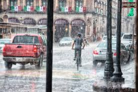

Rainy
The wet season (sometimes called the rainy season) is the time of year when most of a region's average annual rainfall occurs. Generally the season lasts at least a month.[1] The term 'green season' is also sometimes used as a euphemism by tourist authorities.[2] Areas with wet seasons are dispersed across portions of the tropics and subtropics.[3] Under the Köppen climate classification, for tropical climates, a wet season month is defined as a month where average precipitation is 60 millimetres (2.4 in) or more.[4] In contrast to areas with savanna climates and monsoon regimes, Mediterranean climates have wet winters and dry summers. Dry and rainy months are characteristic of tropical seasonal forests: in contrast to tropical rainforests, which do not have dry or wet seasons, since their rainfall is equally distributed throughout the year.[5] Some areas with pronounced rainy seasons will see a break in rainfall mid-season, when the intertropical convergence zone or monsoon trough moves to higher latitudes in the middle of the warm season.[6] When the wet season occurs during a warm season, or summer, precipitation falls mainly during the late afternoon and early evening. In the wet season, air quality improves, fresh water quality improves, and vegetation grows substantially, leading to crop yields late in the season. Rivers overflow their banks, and some animals retreat to higher ground. Soil nutrients diminish and erosion increases. The incidence of malaria increases in areas where the rainy season coincides with high temperatures, particularly in tropical areas.[7] Some animals have adaptation and survival strategies for the wet season. Often, the previous dry season leads to food shortages in the wet season, as the crops have yet to mature.